02 — TASKS / TABULAR
NASA KEPLER · EXPLORATORY DATA ANALYSIS
Signals beyond
the starlight.
A reproducible study of Kepler Objects of Interest: audit data quality, explore physical measurements, prevent target leakage, and compare a linear baseline with a class-aware nonlinear model.
01 — DATASET OVERVIEW
TARGET DISTRIBUTIONFIG. 01
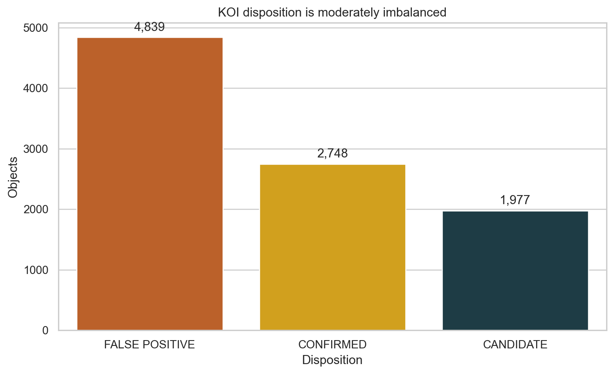
Classify each observed transit signal as CONFIRMED, CANDIDATE, or FALSE POSITIVE from catalogue-level measurements.
More than 2,000 rows and 10 columns, with missing values, categorical encoding, numerical scaling, imbalance, and outliers.
Vetting outcomes, confidence scores, false-positive flags, object names, and identifiers are excluded from model inputs.
02 — FEATURE LIST & DATA TYPES
| # | Attribute | Data type | Non-null | Missing | Unique | Description |
|---|---|---|---|---|---|---|
| 01 | kepid | int64 | 9,564 | 0 | 8,214 | Kepler Input Catalog host-star identifier. |
| 02 | kepoi_name | object · ID | 9,564 | 0 | 9,564 | Unique KOI designation; excluded from model inputs. |
| 03 | kepler_name | object | 2,748 | 6,816 · 71.27% | 2,748 | Official name assigned only to confirmed planets; leakage risk. |
| 04 | koi_disposition | object · target | 9,564 | 0 | 3 | Final archive classification to predict. |
| 05 | koi_pdisposition | object | 9,564 | 0 | 2 | Pipeline disposition; excluded because it encodes vetting outcome. |
| 06 | koi_score | float64 | 8,054 | 1,510 · 15.79% | 650 | Disposition confidence score; excluded to prevent leakage. |
| 07 | koi_fpflag_nt | int64 · flag | 9,564 | 0 | 3 | Not-transit-like false-positive flag; excluded from inputs. |
| 08 | koi_fpflag_ss | int64 · flag | 9,564 | 0 | 2 | Stellar-eclipse false-positive flag; excluded from inputs. |
| 09 | koi_fpflag_co | int64 · flag | 9,564 | 0 | 2 | Centroid-offset false-positive flag; excluded from inputs. |
| 10 | koi_fpflag_ec | int64 · flag | 9,564 | 0 | 2 | Ephemeris-match false-positive flag; excluded from inputs. |
| 11 | koi_period | float64 | 9,564 | 0 | 9,564 | Orbital period in days. |
| 12 | koi_period_err1 | float64 | 9,110 | 454 · 4.75% | 7,448 | Positive orbital-period uncertainty. |
| 13 | koi_period_err2 | float64 | 9,110 | 454 · 4.75% | 7,448 | Negative orbital-period uncertainty. |
| 14 | koi_impact | float64 | 9,201 | 363 · 3.80% | 2,406 | Projected transit impact parameter. |
| 15 | koi_duration | float64 | 9,564 | 0 | 7,834 | Transit duration in hours. |
| 16 | koi_depth | float64 | 9,201 | 363 · 3.80% | 6,953 | Fractional stellar brightness loss in ppm. |
| 17 | koi_prad | float64 | 9,201 | 363 · 3.80% | 2,988 | Estimated planet radius in Earth radii. |
| 18 | koi_prad_err1 | float64 | 9,201 | 363 · 3.80% | 1,787 | Positive planet-radius uncertainty. |
| 19 | koi_prad_err2 | float64 | 9,201 | 363 · 3.80% | 1,561 | Negative planet-radius uncertainty. |
| 20 | koi_teq | float64 | 9,201 | 363 · 3.80% | 2,511 | Estimated equilibrium temperature in kelvin. |
| 21 | koi_insol | float64 | 9,243 | 321 · 3.36% | 7,801 | Incident stellar flux relative to Earth. |
| 22 | koi_model_snr | float64 | 9,201 | 363 · 3.80% | 2,740 | Transit model signal-to-noise ratio. |
| 23 | koi_tce_plnt_num | float64 | 9,218 | 346 · 3.62% | 8 | Planet-candidate number within a host system. |
| 24 | koi_tce_delivname | object | 9,218 | 346 · 3.62% | 3 | TCE catalogue delivery release; categorical model input. |
| 25 | koi_steff | float64 | 9,201 | 363 · 3.80% | 2,445 | Host-star effective temperature in kelvin. |
| 26 | koi_slogg | float64 | 9,201 | 363 · 3.80% | 1,557 | Host-star surface gravity (log10 cgs). |
| 27 | koi_srad | float64 | 9,201 | 363 · 3.80% | 2,289 | Host-star radius in solar radii. |
| 28 | ra | float64 | 9,564 | 0 | 8,131 | Right ascension in decimal degrees. |
| 29 | dec | float64 | 9,564 | 0 | 8,195 | Declination in decimal degrees. |
| 30 | koi_kepmag | float64 | 9,563 | 1 · 0.01% | 3,887 | Host-star brightness in the Kepler band. |
03 — FEATURE VALUE BREAKDOWN
| Feature | Role | Kind | Values / range | Distribution / statistics |
|---|---|---|---|---|
koi_disposition | Target | Categorical · nominal | {CONFIRMED, CANDIDATE, FALSE POSITIVE} | FP 4,839 · Confirmed 2,748 · Candidate 1,977 |
koi_pdisposition | Excluded | Categorical · binary | {CANDIDATE, FALSE POSITIVE} | False positive 4,847 · Candidate 4,717 |
koi_period | Feature | Numerical · continuous | 0.242–129,995.778 days | median 9.753 · mean 75.671 · strongly right-skewed |
koi_impact | Feature | Numerical · continuous | 0–100.806 | median 0.537 · mean 0.735 · extreme upper tail |
koi_duration | Feature | Numerical · continuous | 0.052–138.540 hours | median 3.793 · mean 5.622 |
koi_depth | Feature | Numerical · continuous | 0–1,541,400 ppm | median 421.1 · mean 23,791.3 · heavy tail |
koi_prad | Feature | Numerical · continuous | 0.08–200,346 Earth radii | median 2.39 · mean 102.89 · extreme outliers |
koi_teq | Feature | Numerical · continuous | 25–14,667 K | median 878 · mean 1,085.39 |
koi_model_snr | Feature | Numerical · continuous | 0–9,054.7 | median 23.0 · mean 259.90 · strongest model input |
koi_tce_delivname | Feature | Categorical · nominal | 3 releases + missing | DR25 8,054 · Q1–Q16 796 · DR24 368 · missing 346 |
koi_steff | Feature | Numerical · continuous | 2,661–15,896 K | median 5,767 · mean 5,706.82 |
koi_kepmag | Feature | Numerical · continuous | 6.966–20.003 mag | median 14.520 · mean 14.265 · one missing value |
04 — SAMPLE ROWS / FIRST 6 OBJECTS
| kepid | KOI name | Kepler name | Disposition | Score | Period | Radius | Teq | SNR | TCE delivery |
|---|---|---|---|---|---|---|---|---|---|
| 10797460 | K00752.01 | Kepler-227 b | Confirmed | 1.000 | 9.488 | 2.26 | 793 | 35.8 | q1_q17_dr25_tce |
| 10797460 | K00752.02 | Kepler-227 c | Confirmed | 0.969 | 54.418 | 2.83 | 443 | 25.8 | q1_q17_dr25_tce |
| 10811496 | K00753.01 | — | Candidate | 0.000 | 19.899 | 14.60 | 638 | 76.3 | q1_q17_dr25_tce |
| 10848459 | K00754.01 | — | False positive | 0.000 | 1.737 | 33.46 | 1,395 | 505.6 | q1_q17_dr25_tce |
| 10854555 | K00755.01 | Kepler-664 b | Confirmed | 1.000 | 2.526 | 2.75 | 1,406 | 40.9 | q1_q17_dr25_tce |
| 10872983 | K00756.01 | Kepler-228 d | Confirmed | 1.000 | 11.094 | 3.90 | 835 | 66.5 | q1_q17_dr25_tce |
Values are shown from the cached NASA Exoplanet Archive snapshot used by the executable notebook. Period is in days, radius in Earth radii, and equilibrium temperature in kelvin.
05 — MISSING & DUPLICATE VALUES
QUALITY / MISSINGNESSFIG. 02
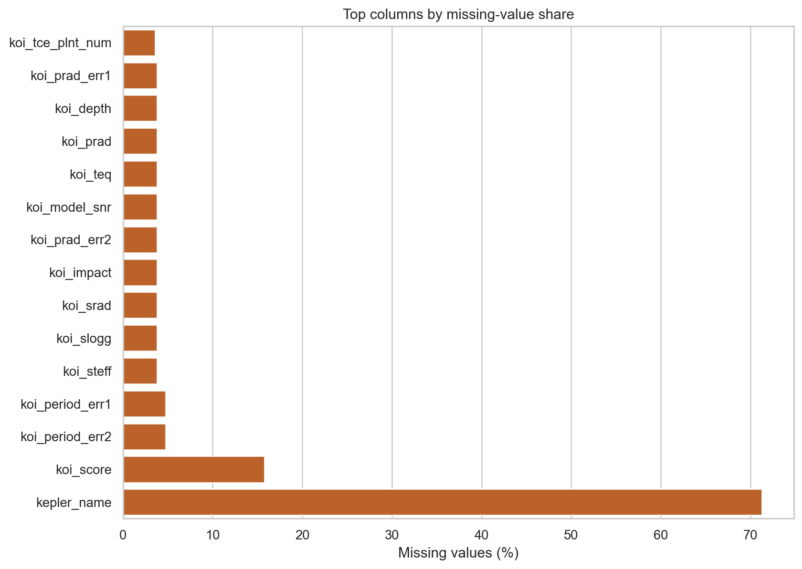
kepler_name is missing because only confirmed objects receive an official name. It is excluded to avoid leakage.| Feature | Missing count | Missing % | Visual | Severity | Strategy |
|---|---|---|---|---|---|
kepler_name | 6,816 | 71.27% | Critical | Exclude: official naming directly reveals confirmed status. | |
koi_score | 1,510 | 15.79% | Moderate | Exclude: catalogue confidence score is target-adjacent. | |
period errors | 454 each | 4.75% | Low | Exclude uncertainty columns from the compact model feature set. | |
physical group | 363 each | 3.80% | Low | Median imputation fitted on training data only. | |
koi_tce_delivname | 346 | 3.62% | Low | Most-frequent imputation, then one-hot encoding. | |
koi_insol | 321 | 3.36% | Low | Median imputation inside the preprocessing pipeline. | |
koi_kepmag | 1 | 0.01% | Low | Median imputation inside the preprocessing pipeline. |
QUALITY / IQR OUTLIERSFIG. 06
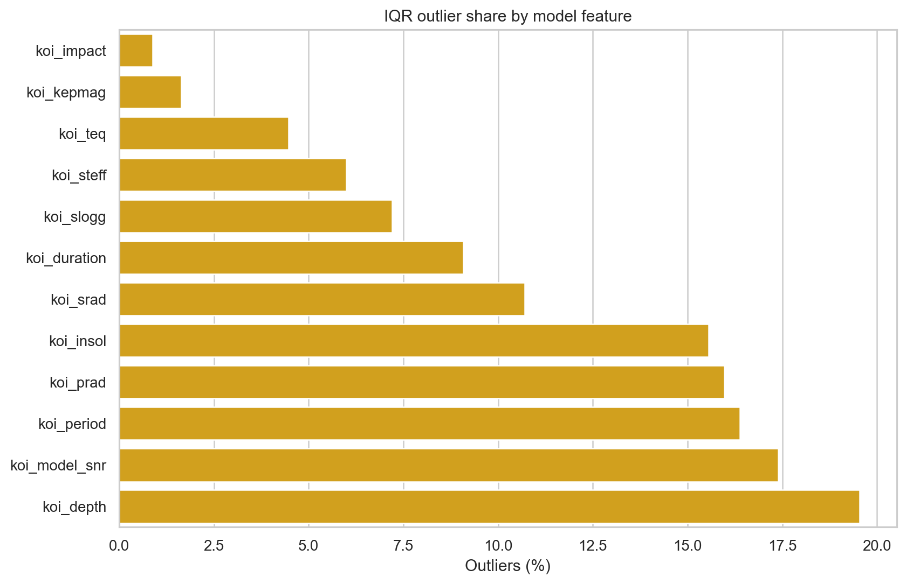
06 — NUMERICAL FEATURE DISTRIBUTIONS
ORBITAL PERIODFIG. 03
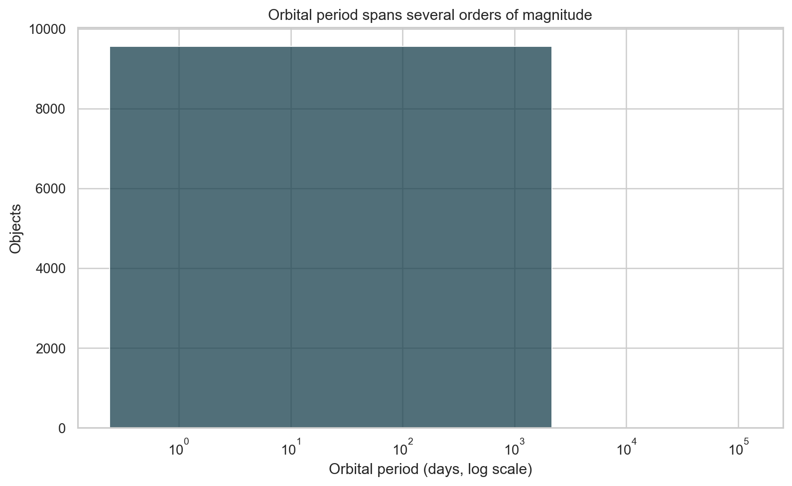
PLANET RADIUSFIG. 04
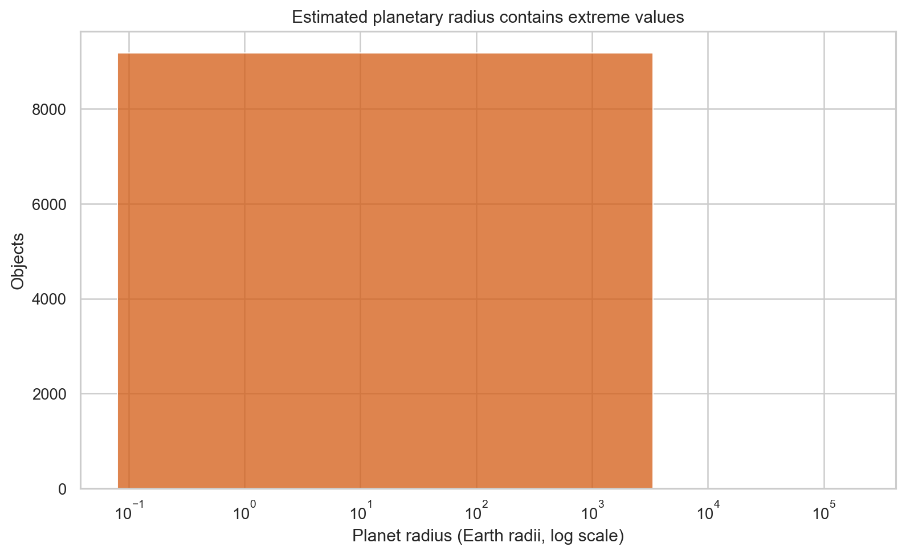
STELLAR TEMPERATUREFIG. 05
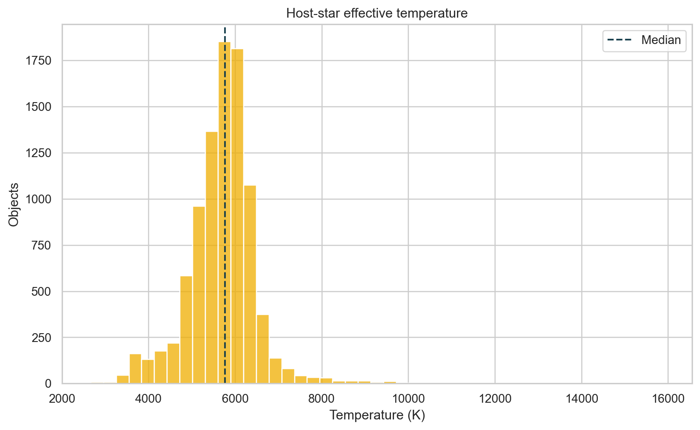
07 — CATEGORICAL FEATURE DISTRIBUTIONS
TCE DELIVERY CATALOGUEFIG. 15
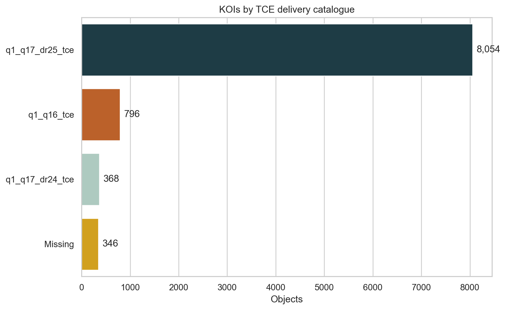
08 — CORRELATION ANALYSIS
SPEARMAN CORRELATIONFIG. 09
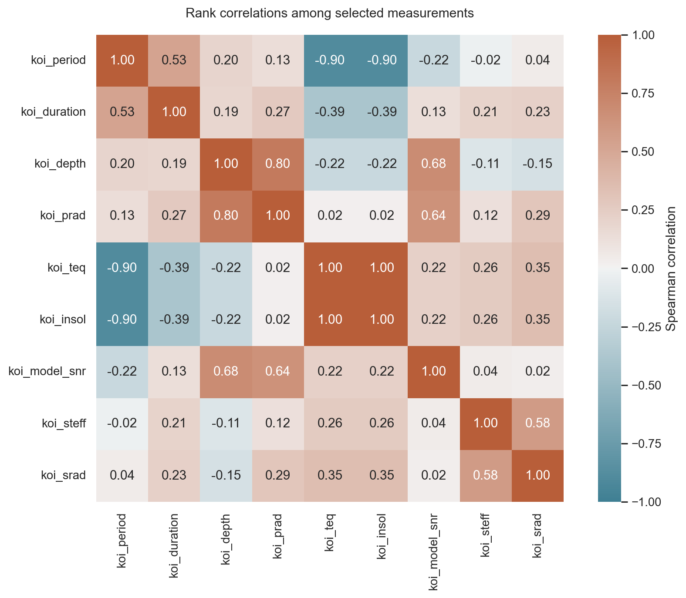
09 — TARGET RELATIONSHIPS
TARGET × RADIUSFIG. 07
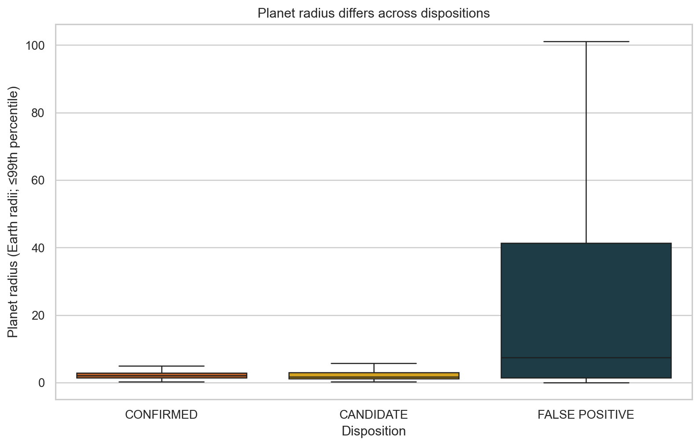
TARGET × SIGNALFIG. 08
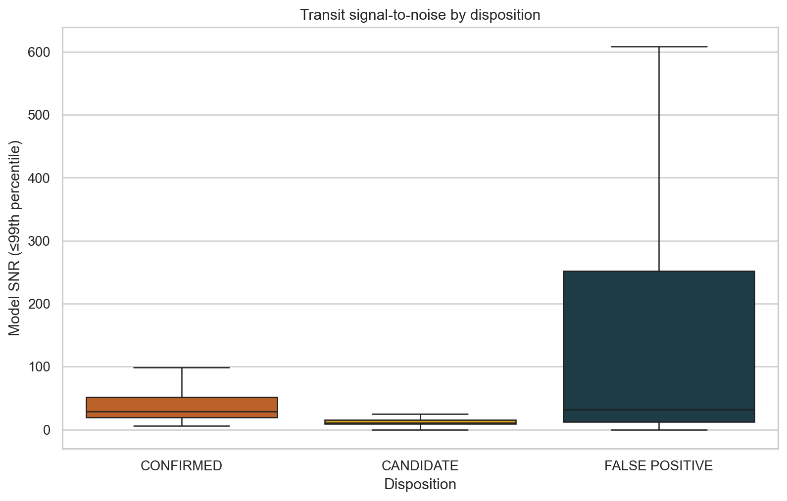
10 — PREPROCESSING
RAW TABLE→GROUP SPLIT→IMPUTE→ENCODE→SCALE→MODEL
BEFORE SCALINGFIG. 10
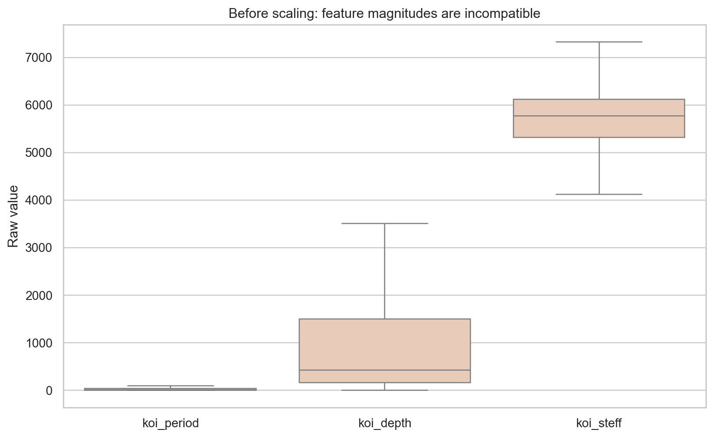
AFTER SCALINGFIG. 11
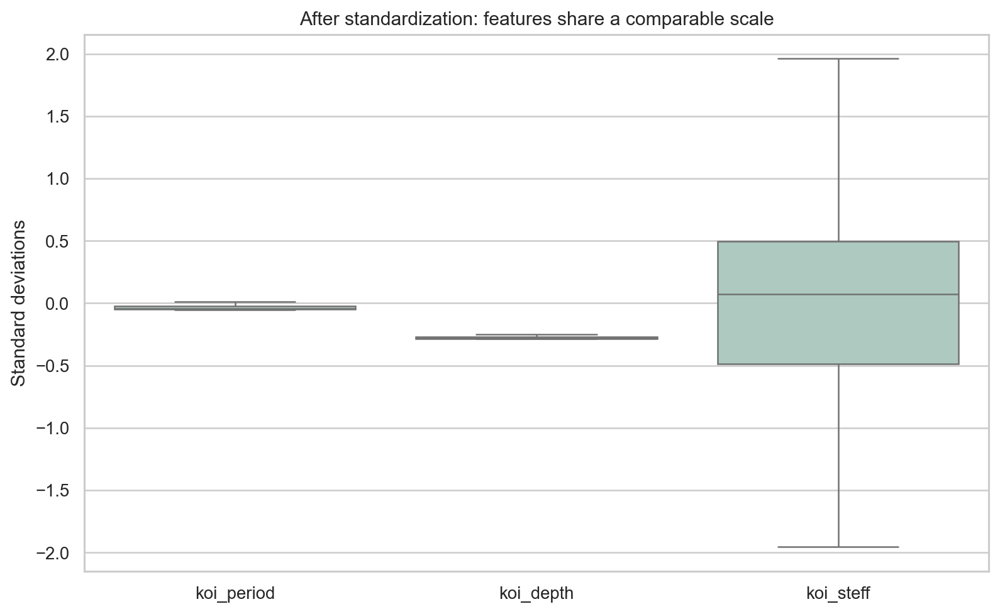
11 — MODEL COMPARISON
VALIDATION METRICSFIG. 12
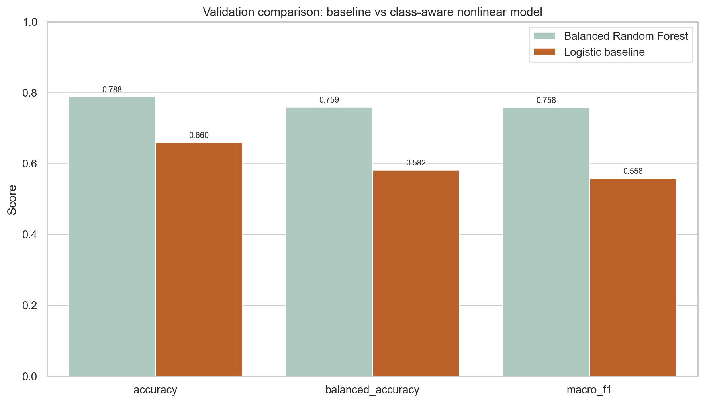
TEST ERRORSFIG. 13
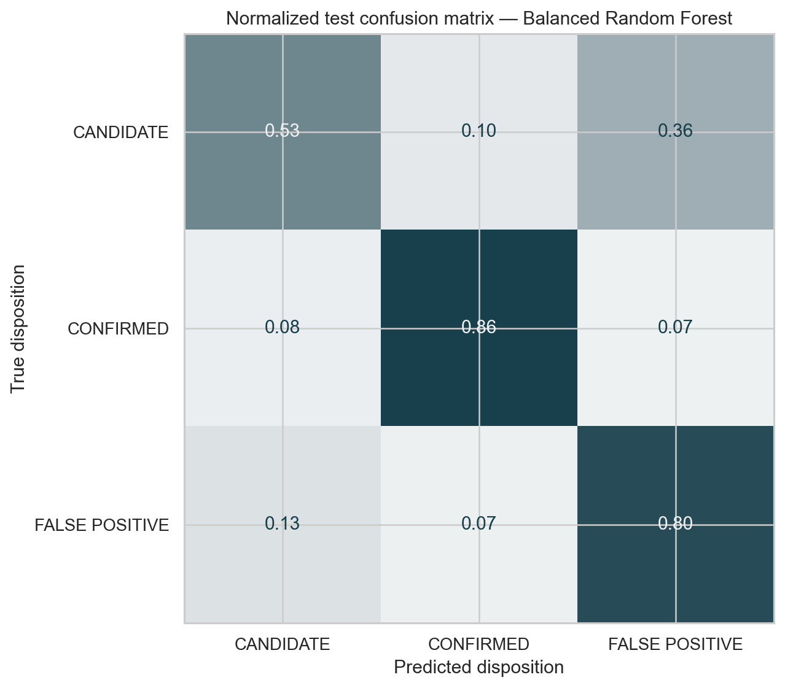
FEATURE IMPORTANCEFIG. 14
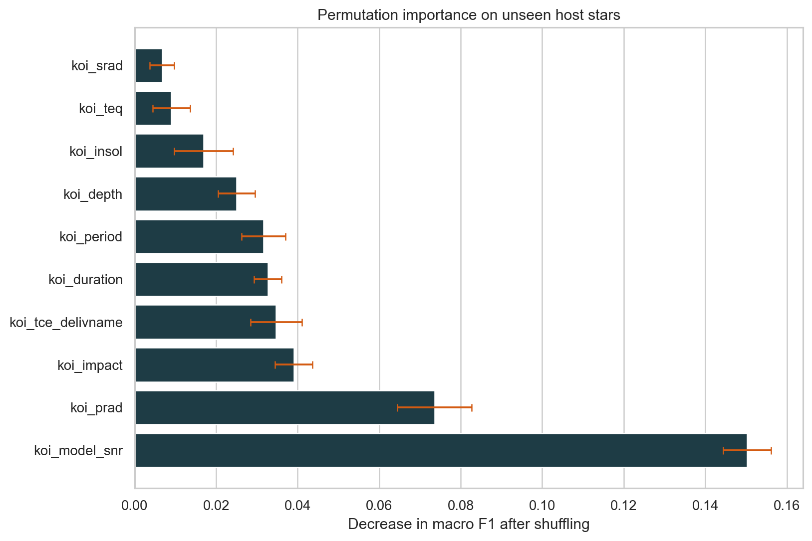
12 — KEY INSIGHTS
- The KOI catalogue satisfies every tabular-data constraint in the assignment.
- Grouped splitting prevents the same host star from leaking across evaluation sets.
- The extended model raises validation macro F1 from 0.558 to 0.758.
- Candidates remain scientifically ambiguous and are the hardest class to predict.
- Model importance describes predictive utility, not physical causality.
- Predictions support review priorities; they do not establish planetary confirmation.